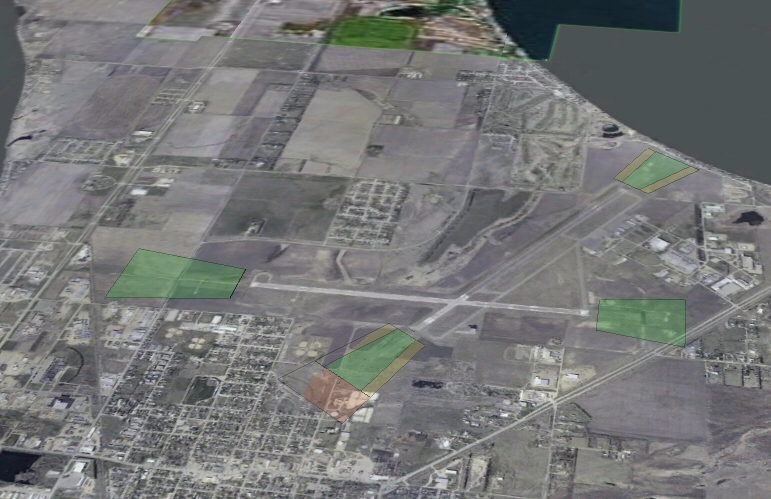
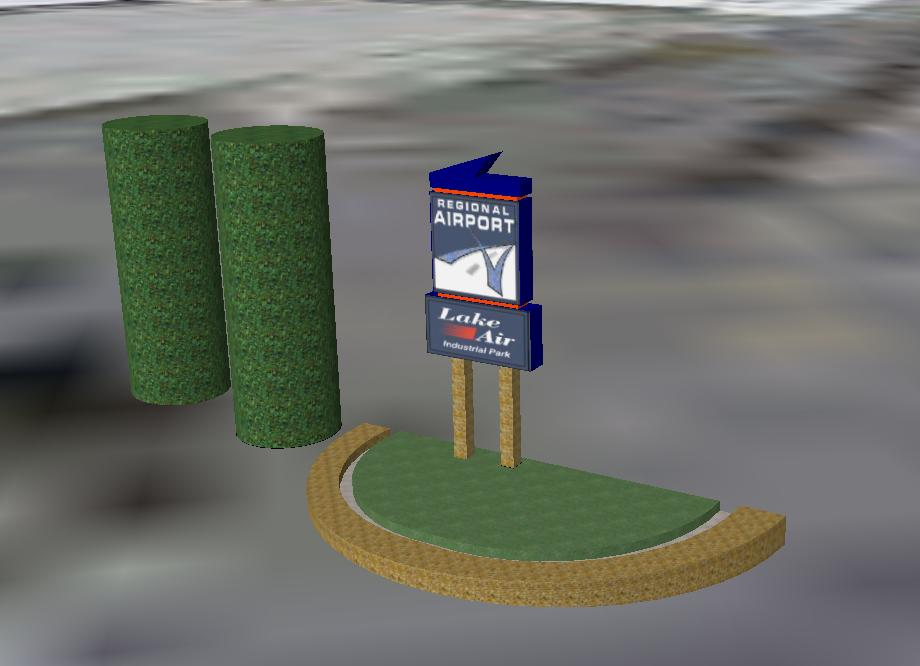

OpenAirport.org - What can we do for you
Google Earth Design
In addition to the OpenAirport.org system, I can also re-create your airport in Google Earth, including all of the Part 77 surfaces, updated aerial photos, AC 150 surfaces such as the Runway Protection Zones, and all other surfaces that are critical to the safety of an airports operation. The completed package makes an excellent tool for planning and zoning departments, urban developers, and county and local officials.
The total cost of producing your airport in Google Earth depends on the following factors:
- The number of runways
- The number of buildings
- Type of approaches
- The number of planed future construction phases on the airport layout plan
- Any modifications from standards that make the surfaces none standard
- Can you provide an electronic CAD drawing file of your airport surfaces. Something from ArcView/Info, AutoCAD, etc.
| Image | What is it? |
|---|---|

|
This is an overview of the Part 77 and other surfaces at KATY. It looks like a little mess, but with so many layers showing there is bound to be some z-fighting. You can see the Class E airspace, The Transitional Surface, All of the Departure and Approach surfaces, as well as other airport surfaces. |

|
Here we are looking at the Approach surfaces at KATY. |

|
This is a close up of the runway intersection bowl created by the Transitional Surfaces. Also shown are the approach surfaces. |
|  | One of the most critical surfaces at an airport, the Runway Protection Zone. |

|
The Stone Hangar at KATY. Built in 1934 it still stands today. Used for storage of off-season equipment. |
|  | The airport sign at KATY. |
To try out a limited version of the KATY surfaces please download the file 6,059 kb. When the file is done downloading, click the 'open' button and double-click on the file. This will open the file in Google Earth and allow you to fly the KATY surfaces. If you like what you see please contact Erick for more information.
Airport Layout IdeasIf you want a 3rd party outside of your airport environment to come up with exciting ideas on how you could add or modify your airport, please contact me. I enjoy the challanege of looking over an airports layout and see what kind of modifications could be done to increase square footage, decrease costs, install or develop a new addition on to the airport. Your in-house or consultant engineer should always be your first choice, but if you want a general overview for new ideas OpenAirport may be able to assist you in the design process.